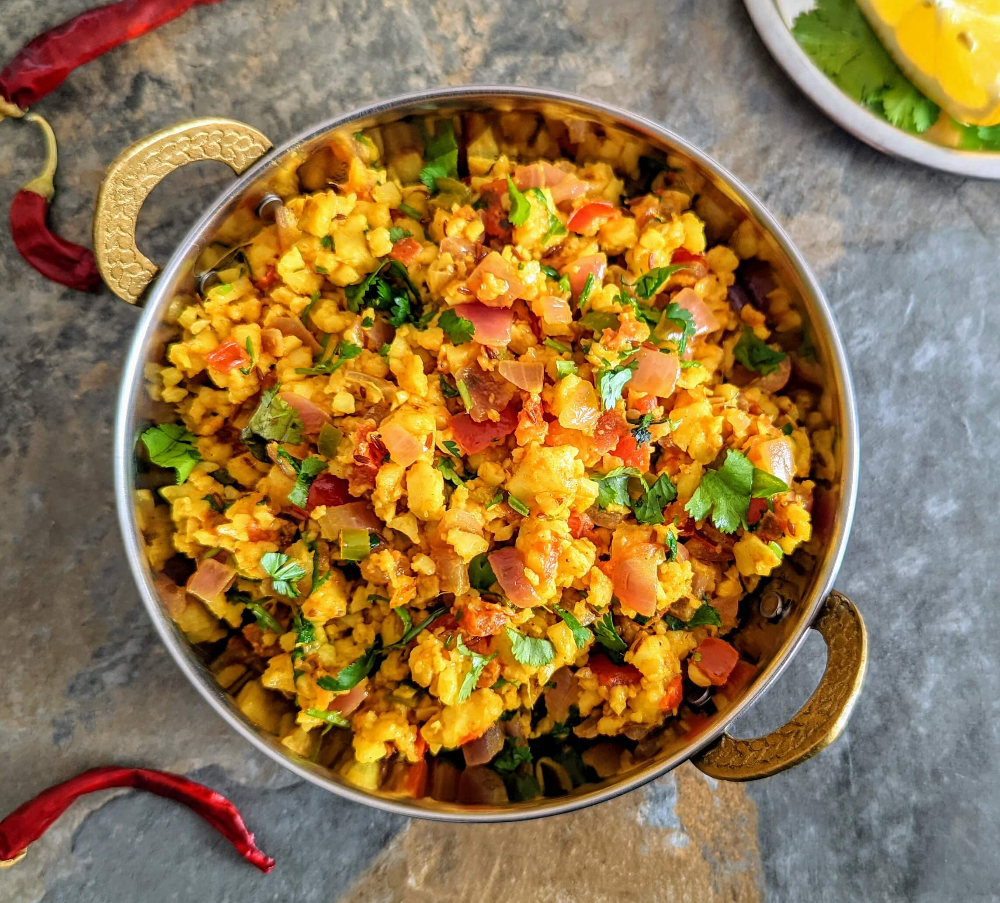

Paneer Bhurji

Description:
A quick and delicious scramble of crumbled paneer cooked with onions, tomatoes, and mild spices, ideal for breakfast or a light dinner.
Ingredients:
- Paneer: 200g (crumbled)
- Onion: 1 (chopped)
- Tomato: 1 (chopped)
- Green peas (optional): 1/4 cup
- Green chilies: 1 (chopped)
- Ginger-garlic paste: 1/2 tsp
- Turmeric: 1/4 tsp
- Red chili powder: 1/2 tsp
- Cumin seeds: 1/2 tsp
- Salt to taste
- Oil: 1 tsp
- Coriander leaves: for garnish
Steps:
- Heat oil in a pan, add cumin seeds and let them splutter.
- Sauté onions, green chilies, and ginger-garlic paste until fragrant.
- Add tomatoes, turmeric, red chili powder, and salt. Cook until tomatoes are mushy.
- Add crumbled paneer and green peas. Mix well and cook for 5 minutes.
- Garnish with coriander leaves and serve with roti or bread.